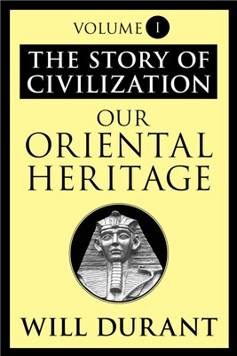

1:01:51 · 8 OPERE
Un rumore da niente.
Il filo del discorso
Il relatore propone di distinguere il pensiero argomentato dal rumore delle opinioni. Un incidente di parcheggio raccontato in prima persona introduce la differenza fra osservare un fatto e costruire una spiegazione che protegga la propria immagine. Il discorso passa alla divulgazione scientifica, ai titoli sull’intelligenza e al modo in cui prestigio e semplificazione possono sostituire la comprensione. Sono giudizi polemici che richiedono alcuni riscontri: la ricerca fisica non si è fermata al 1927 e la possibile origine artificiale di ‘Oumuamua non è un risultato dimostrato. Consumer Behavior viene poi letto dal relatore come esempio di una cultura che riduce il cittadino a consumatore; questa interpretazione non equivale a una prova di controllo totale delle persone. Il confronto decisivo è con la Storia della civiltà di Durant, dalla quale vengono letti due passi del primo volume: la civiltà intesa come organizzazione favorevole alla creazione culturale e il rifiuto di un requisito razziale per il suo sviluppo. Architettura, vita collettiva e trasmissione del sapere diventano così il contrappunto alla frammentazione sociale denunciata dal relatore. Orwell, Mandeville e la fiaba del re nudo offrono immagini del rapporto fra potere e percezione. Le accuse relative a politica, media e pandemia rimangono attribuite a chi parla; l’assenza di un eccesso di mortalità non è confermata dai dati Istat. La conclusione oppone il lavoro paziente della conoscenza all’opinione fragorosa, senza trasformare questo contrasto in una diagnosi delle persone.
I libri nel discorso

Could Solar Radiation Pressure Explain ‘Oumuamua’s Peculiar Acceleration?
Identificazione probabile
Prima pagina dell’articolo: Bialy e Loeb, 2018: Prima pagina integrale del preprint arXiv:1810.11490v4, 8 novembre 2018, accettato per The Astrophysical Journal Letters; non una copertina libraria.
Riproduzione integrale della prima pagina del PDF arXiv v4; autori, titolo, abstract e identificativo visibili. L’identificazione del lavoro ricordato dal relatore resta probabile: il titolo non è pronunciato.
Articolo Harvard su un oggetto interstellare interpretato come possibile artefatto: riscontro probabile Bialy–Loeb 2018; titolo e autori non pronunciati.
Passaggio 15:20 ↗ · Fonti e libro ↗Consumer Behavior
Identificazione probabile
Copertina: Houghton Mifflin · terza edizione, ISBN 0618264825
Copertina autentica dell’edizione identificata per ISBN, distribuita da OpenLibrary. Copertina di Consumer Behavior, con i nomi Hoyer e MacInnis. CiNii registra l’edizione 2004; OpenLibrary riporta ottobre 2003, differenza di catalogazione che non autorizza a identificare con certezza la copia mostrata.
Consumer Behavior, due autori americani e 697 pagine: corrispondenza con Hoyer–MacInnis, terza edizione; autori e anno non pronunciati.
Passaggio 29:32 ↗ · Fonti e libro ↗
The Story of Civilization (Storia della civiltà)
Copertina del volume I della serie, Our Oriental Heritage: Simon & Schuster · immagine del volume I, ebook 2011
Copertina di Our Oriental Heritage, primo volume della serie; ebook ISBN 9781451646689, dal catalogo dell’editore. È un’immagine rappresentativa dichiarata del volume I, non la copertina di un cofanetto né degli undici volumi completi. L’edizione digitale complessiva del 2014 ha ISBN 9781476779713, che non viene assegnato a questa immagine. Nessuna edizione viene attribuita al video.
Titolo tradotto Storia della civilizzazione, undici volumi, Will e Ariel Durant espliciti; coautoria corretta nei dati bibliografici.
Passaggio 34:27 ↗ · Fonti e libro ↗Our Oriental Heritage. The Story of Civilization, Volume I
Identificazione probabile
Copertina: Simon & Schuster · edizione ebook 2011
Copertina autentica dell’ebook Simon & Schuster del 7 giugno 2011, 1049 pagine. Prima pubblicazione dell’opera 1935; non si attribuisce questa immagine alla ristampa 1963 citata dal relatore. Il titolo è visibile interamente e comprende l’indicazione Volume I.
Volume I identificato dal capitolo Le condizioni della civiltà, frase iniziale, passo sui prerequisiti razziali e prima pubblicazione 1935; sottotitolo non pronunciato.
Passaggio 44:01 ↗ · Fonti e libro ↗
1984
Identificazione probabile
Copertina: Newton Compton · edizione illustrativa
Orwell, Winston Smith, O’Brien e quattro/cinque dita identificano il romanzo; titolo non pronunciato.
Passaggio 47:48 ↗ · Fonti e libro ↗
La favola delle api
Copertina: Laterza · Economica Laterza · edizione di riferimento
Titolo Favola delle api esplicito; autore riscontrato nelle fonti bibliografiche, senza classificare il testo come distopia tecnologica.
Passaggio 49:10 ↗ · Fonti e libro ↗
I vestiti nuovi dell’imperatore
Identificazione probabile
Copertina: Rizzoli, 2014 · eBook di riferimento
La storia del re nudo e del bambino identifica probabilmente la fiaba di Andersen; nome e titolo non pronunciati.
Passaggio 50:56 ↗ · Fonti e libro ↗
Lettera a Franklin D. Roosevelt del 2 agosto 1939
Identificazione probabile
Prima pagina della lettera: Lettera del 2 agosto 1939; prima pagina riprodotta nel dossier didattico della FDR Presidential Library, p. 123 del PDF.
Riproduzione autentica della prima pagina della lettera, con intestazione e apparato del dossier didattico FDR Library. Riproduzione della pagina 123 del documento; l’immagine non mostra l’intero documento. La risposta di Roosevelt appartiene a un documento distinto e successivo. Nessuna edizione o copia visibile nel filmato è stata identificata.
La famosa lettera di Einstein sottoposta da Szilárd allude probabilmente al documento a Roosevelt del 2 agosto 1939; destinatario e data non pronunciati.
Passaggio 59:15 ↗ · Fonti e libro ↗